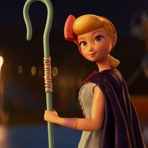

Sinopsys
Woody and the gang go on a road trip with new toy Forky, who's
convinced he's trash and doesn't yet understand his role in the
world. Along the way, Woody is unexpectedly reunited with
independent spirit Bo Peep and finds himself faced with a decision,
and a future, he never imagined
Characters
Woody

He is a vintage cowboy doll that originally belonged to a boy
named Andy Davis. As Andy's favorite since kindergarten, Woody
served as the leader of Andy's toys, a position he upheld by
looking out for each member of the group. When Andy enters
adulthood and leaves for college, Woody is donated to a little
girl named Bonnie Anderson. He remains with Bonnie for some time,
before choosing to become an owner-less antique devoted to helping
lost toys find owners, alongside his girlfriend Bo Peep.
Buzz

He is a spaceman action figure originally belonging to Andy Davis.
Buzz was created during a time where astronauts were especially
popular amongst children. His arrival in the original Toy Story
created conflict with Andy's favorite toy Sheriff Woody, though
this rivalry would eventually blossom into a lifelong friendship.
Forky

An actual spork-turned-craft-project, Forky is pretty sure that he
doesn’t belong in Bonnie's room. Unfortunately, every time he
tries to get away, Woody yanks him back into an adventure he’d
rather skip. Forky is a toy that Bonnie made out of a disposable
spork, so he’s facing a crisis. He wants to fulfill his purpose as
a spork, but now has a new toy purpose thrust upon him.”
Bo Peep

Bo is the romantic interest (later girlfriend) of Woody, providing
a calm and loving comfort whenever he is overwhelmed. She is noted
for using her shepherdess crook to hook her cowboy and bring him
closer in a romantic way. In private, she is a great deal more
daring with her words and actions, which Woody seems to be quite
fond of. She and her sheep were bought along with the lamp not too
long after Molly was born, due to the baby being scared of the
dark, which "broke every toy's heart", according to Woody. The
lamp comforted Molly and she would often have her hand lay on Bo's
feet.
“Being there for a child in the most noble thing a toy can do.”
We would love to hear about Toy Story 4
Woody: